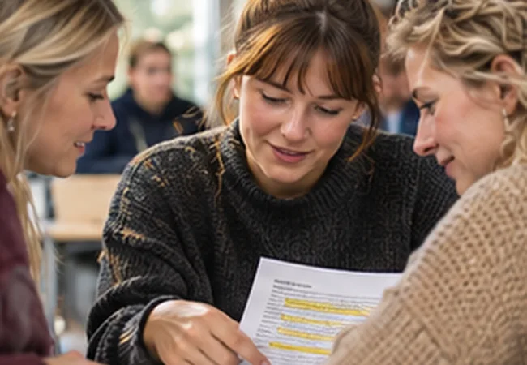

Lærerstuderende
Arbejd med elevobservation, læseundervisning og faglige begrundelser, du kan tage med i praktikken.
Åbn sporetFind en rækkefølge, der passer til din uddannelse. Alle spor bruger den samme praksisnære læseguide, men med forskellige fokus og opgaver.

Du kan gå direkte til et studiespor eller bruge søgningen til at finde en bestemt guide, case eller et studieark.
Arbejd med elevobservation, læseundervisning og faglige begrundelser, du kan tage med i praktikken.
Åbn sporetØv tolkning af test og observationer, kollegial vejledning og systematisk opfølgning.
Åbn sporetUndersøg en praksisproblemstilling med relevant teori, metode, analyse og kritisk diskussion.
Åbn sporet